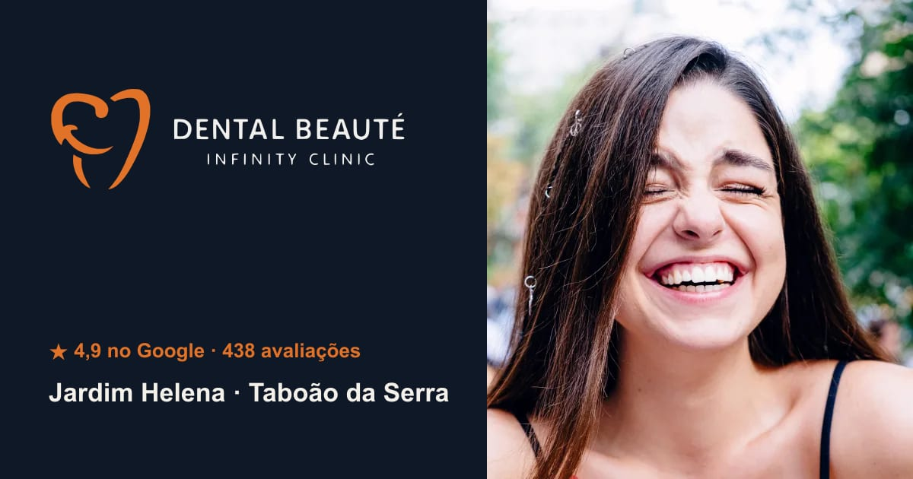

odontologia
Dental Beauté
Pendências antes de fechar
- Confirmar o horário de segunda-feira (o Google mostrava fechado por causa do feriado de 12/10; usei 08h–18h como nos outros dias úteis).
- Logo recriada em vetor a partir da arte do Google/Instagram: pedir o arquivo original.
- Fotos de tratamentos são de banco de imagens (Unsplash, uso comercial liberado); trocar por fotos reais da clínica quando o cliente aprovar.